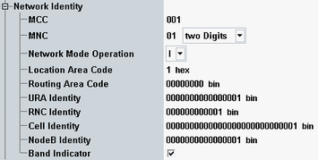

The "Network Identity" settings configure parameters of the simulated radio network. The values are broadcast to the UE under test.

Specifies the three-digit mobile country code (MCC).
According to 3GPP TS 25.307, section 6.1.2, the mobile country code (MCC) is in the range 440 to 443 when using operating band VI. Otherwise a release 5 UE (or lower) possibly fails to register.
Remote command:Specifies the mobile network code (MNC). A two or three-digit MNC can be set.
Remote command:Selects the network operation mode as specified in 3GPP TS 23.060. This parameter indicates whether a Gs interface is present in the network (mode I) or not (mode II).
Remote command:Specifies the location area code for CS services.
Remote command:Specifies the routing area code for PS services.
Remote command:Specifies the UTRAN registration area (URA) identity.
Remote command:Specifies the radio network controller (RNC) identity.
Remote command:Specifies the cell identity.
This parameter is suspended in the state CEST (connection established).
Specifies the NodeB identity.
Remote command:Specifies whether the band indicator is broadcast as part of the system information or not.
Remote command: